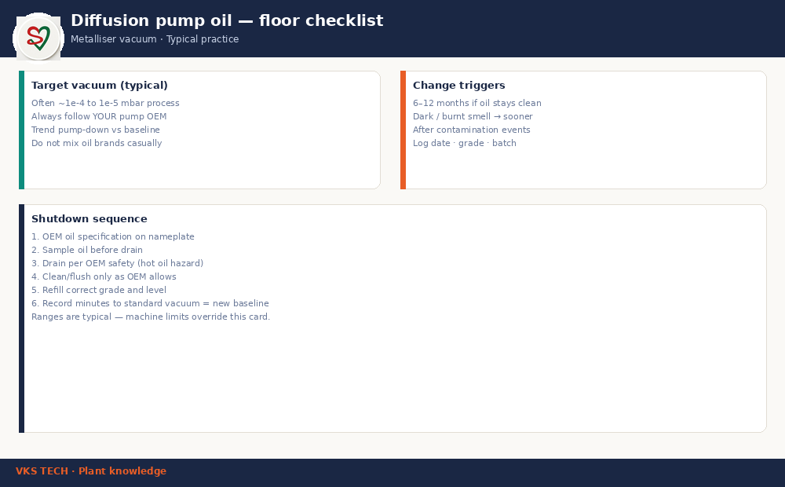

🛢️ CVC4 Diffusion Pump Oil — The Metalliser Vacuum Decision Most Plants Get Wrong
📖 12-min read · Metalliser vacuum systems · Bookmark for the next shutdown
Your metalliser’s barrier quality, cycle time, and boat life all depend on a fluid most operators never think about: diffusion pump oil. When vacuum is slow after a boat change, when OD drifts mid-cycle, or when the cold trap fills with dark sludge — look at the oil first, not only the gauges.
This guide is written for process engineers, maintenance leads, and supervisors on Indian metalliser lines. Honest ranges, shop-floor signs, and a shutdown checklist you can run on the next planned stop.
- Process vacuum target: often ~10⁻⁴ to 10⁻⁵ mbar for stable Al evaporation (confirm OEM)
- Oil charge: usually 0.5–2 L by pump size — read the nameplate
- Change interval: 6–12 months if oil stays clean; sooner if dark or burnt
- Wrong oil cost: slow pump-down + scrap + shorter boat life

1. What the oil is actually doing
A diffusion pump has no moving parts in the vapour stream. A heater boils a low-vapour-pressure oil; vapour jets entrain air molecules toward the backing pump. The oil must hold very low vapour pressure, resist oxidation, keep the right viscosity at operating temperature, and tolerate occasional process vapour.
When oil degrades, ultimate vacuum rises, pump-down time stretches, and residual gas starts to fight aluminium evaporation. That shows up as OD instability, more scrap, and operators “pushing current” on boats to compensate — which then shortens boat life.
2. Grade selection — do not mix by brand habit
Plants often top up with “whatever is in the stores.” That is how you get mixed chemistry, sludge, and unpredictable vapour pressure. Rules that work on the floor:
- Match the OEM oil specification on the pump plate / manual first
- Do not mix brands or grades without a full drain and clean
- Keep one approved grade as plant standard; label the drum and the pump
- Store sealed, cool, away from dust and solvent fumes
“CVC4-class” is used in industry as a shorthand for a common metalliser-friendly diffusion oil family. Always verify the exact product against your pump OEM list — the name on the drum is not a substitute for the specification.
3. When to change — calendar is not enough
A clean plant can run 6–12 months between changes. Bring the change forward when you see:
- Oil sample is dark, viscous, or smells burnt
- Pump-down time to standard set-point is 20–30% slower than last baseline
- Cold trap / baffle shows unusual sludge
- After a major contamination event (air dump, solvent ingress, process mishap)
Best practice: after every oil change, record minutes to your standard vacuum set-point. That number is your new baseline. Without it, “vacuum feels slow” stays a feeling.
4. Contamination chain — vacuum is a system
Oil is only one node. Chamber leaks, tired O-rings, wet loads, and backing-pump oil condition all load the diffusion pump. If pump-down is slow after a fresh oil change, do not only blame the drum — walk leaks and backing pump next.
5. Cost of the wrong oil
One rejected metallised jumbo often costs more than a year of correct oil. Add the hidden cost: extra boat changes when operators raise current to fight residual gas. Oil discipline is one of the cheapest vacuum upgrades available.
6. Next shutdown checklist
- Read OEM oil spec and last change date
- Sample current oil (colour, smell) before drain
- Inspect cold trap / baffle for sludge
- Drain per OEM safety procedure (hot oil hazard)
- Clean / flush only as OEM allows — no random solvents
- Refill correct grade and level; log batch number
- After restart: record pump-down time to standard vacuum = new baseline
🛢️ CVC4 डिफ्यूजन पंप ऑयल — मेटलाइज़र वैक्यूम का वो फैसला जो ज्यादातर प्लांट गलत करते हैं
📖 12 मिनट · मेटलाइज़र वैक्यूम सिस्टम · अगले शटडाउन के लिए बुकमार्क करें
मेटलाइज़र की बैरियर क्वालिटी, साइकिल टाइम और बोट लाइफ — तीनों एक ऐसे तरल पर निर्भर करती हैं जिस पर ज्यादातर ऑपरेटर ध्यान नहीं देते: डिफ्यूजन पंप ऑयल। बोट चेंज के बाद वैक्यूम देर से आना, साइकिल के बीच OD ड्रिफ्ट, या कोल्ड ट्रैप में काला स्लज — पहले सिर्फ गेज नहीं, पंप के ऑयल को देखें।
यह गाइड भारतीय मेटलाइज़र लाइनों के प्रोसेस इंजीनियर, मेंटेनेंस लीड और सुपरवाइज़र के लिए है। ईमानदार रेंज, शॉप-फ्लोर संकेत, और अगले प्लान्ड स्टॉप पर चलाने योग्य चेकलिस्ट।
- प्रोसेस वैक्यूम लक्ष्य: स्थिर Al इवैपोरेशन के लिए अक्सर ~10⁻⁴ से 10⁻⁵ mbar (OEM कन्फर्म करें)
- ऑयल चार्ज: पंप साइज़ के अनुसार आमतौर पर 0.5–2 लीटर — नेमप्लेट पढ़ें
- चेंज इंटरवल: साफ स्थिति में 6–12 महीने; काला/जला होने पर जल्दी
- गलत ऑयल की कीमत: धीमा पंप-डाउन + स्क्रैप + कम बोट लाइफ
1. ऑयल वास्तव में क्या काम करता है
डिफ्यूजन पंप में वेपर स्ट्रीम में मूविंग पार्ट नहीं होते। हीटर कम वेपर-प्रेशर ऑयल को उबालता है; वेपर जेट हवा के अणुओं को बैकिंग पंप की ओर ले जाते हैं। ऑयल में होना चाहिए: बहुत कम वेपर प्रेशर, ऑक्सीकरण प्रतिरोध, सही विस्कॉसिटी, और कभी-कभार प्रोसेस वेपर सहने की क्षमता।
जब ऑयल खराब होता है, अल्टीमेट वैक्यूम बिगड़ता है, पंप-डाउन लंबा होता है, और रेसिडुअल गैस एल्युमिनियम इवैपोरेशन से टकराती है। नतीजा: अस्थिर OD, ज़्यादा स्क्रैप, और ऑपरेटर बोट पर करंट बढ़ाकर कंपेन्सेट करते हैं — जिससे बोट लाइफ और गिरती है।
2. ग्रेड चयन — ब्रांड की आदत से मिक्स न करें
कई प्लांट स्टोर में जो मिल जाए उसी से टॉप-अप कर देते हैं। इसी से केमिस्ट्री मिलती है, स्लज बनता है, और वेपर प्रेशर अनिश्चित हो जाता है। फ्लोर पर काम करने वाले नियम:
- पहले पंप प्लेट / मैनुअल की OEM ऑयल स्पेसिफिकेशन मैच करें
- बिना फुल ड्रेन और क्लीन के ब्रांड या ग्रेड मिक्स न करें
- एक अप्रूव्ड ग्रेड को प्लांट स्टैंडर्ड बनाएँ; ड्रम और पंप पर लेबल लगाएँ
- सील करके, ठंडी जगह, धूल और सॉल्वेंट फ्यूम से दूर रखें
“CVC4-क्लास” उद्योग में आम मेटलाइज़र-फ्रेंडली डिफ्यूजन ऑयल फैमिली के लिए शॉर्टहैंड है। ड्रम का नाम OEM लिस्ट की जगह नहीं ले सकता — हमेशा पंप OEM सूची से वेरिफाई करें।
3. कब बदलें — सिर्फ कैलेंडर काफी नहीं
साफ प्लांट 6–12 महीने चला सकता है। इन संकेतों पर चेंज आगे बढ़ाएँ:
- सैंपल काला, गाढ़ा, या जली गंध
- स्टैंडर्ड सेट-पॉइंट तक पंप-डाउन पिछली बेसलाइन से 20–30% धीमा
- कोल्ड ट्रैप / बैफल में असामान्य स्लज
- बड़ी कंटैमिनेशन घटना के बाद (एयर डंप, सॉल्वेंट, प्रोसेस मिशैप)
बेस्ट प्रैक्टिस: हर ऑयल चेंज के बाद स्टैंडर्ड वैक्यूम सेट-पॉइंट तक मिनट रिकॉर्ड करें। वही आपकी नई बेसलाइन है। बिना इसके “वैक्यूम स्लो लगता है” सिर्फ फीलिंग रह जाती है।
4. कंटैमिनेशन चेन — वैक्यूम एक सिस्टम है
ऑयल सिर्फ एक नोड है। चैंबर लीक, थके O-रिंग, गीला लोड, और बैकिंग-पंप ऑयल की हालत भी डिफ्यूजन पंप पर लोड डालते हैं। ताज़ा ऑयल के बाद भी पंप-डाउन स्लो हो तो सिर्फ ड्रम को दोष न दें — लीक और बैकिंग पंप भी चेक करें।
5. गलत ऑयल की कीमत
एक रिजेक्टेड मेटलाइज़्ड जंबो अक्सर साल भर के सही ऑयल से महँगा पड़ता है। छिपी कीमत: जब ऑपरेटर रेसिडुअल गैस से लड़ने के लिए करंट बढ़ाते हैं तो अतिरिक्त बोट चेंज। ऑयल डिसिप्लिन सबसे सस्ते वैक्यूम अपग्रेड में से एक है।
6. अगले शटडाउन की चेकलिस्ट
- OEM ऑयल स्पेक और पिछली चेंज तारीख पढ़ें
- ड्रेन से पहले वर्तमान ऑयल सैंपल (रंग, गंध)
- कोल्ड ट्रैप / बैफल स्लज जाँच
- OEM सुरक्षा प्रक्रिया से ड्रेन (गर्म ऑयल खतरा)
- सिर्फ OEM जितनी अनुमति दे — रैंडम सॉल्वेंट से फ्लश न करें
- सही ग्रेड और लेवल भरें; बैच नंबर लॉग करें
- रीस्टार्ट के बाद स्टैंडर्ड वैक्यूम तक पंप-डाउन टाइम = नई बेसलाइन